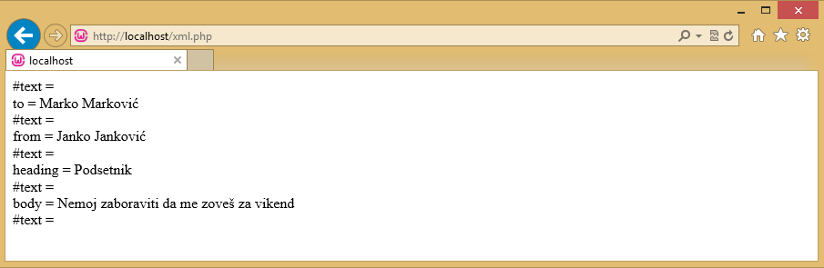

XML (eXtensible Markup Language) je način za serijalizaciju podataka, odnosno način na koji se jednostavno i brzo mogu zapamtiti podaci (a da pri tom to nije baza podataka) i prosledimo ih nekome ko ćee ih takođe razumeti, jer se poštuju iste konvencije. Svaki XML dokument bi trebalo da poseduje deklaraciju:
Deklaracija sadrži osnovne podatke o dokumentu: koja verzija XML-a je u pitanju, koji kodni raspored je korišćen u dokumentu. Opciona je i deklaracija tipa dokumenta (DTD) koja označava skup pravila koja će biti poštovana tokom parsiranja dokumenta. Ova deklaracija može biti napravljena direktno u dokumentu ili učitana iz eksternog izvora.
Nakon deklaracije sledi koreni (document) element dokumenta, i konačno, serijalizovani podaci. Konačno, cela XML struktura izgleda ovako:
XML Deklaracija (XML će funkcionisati i bez deklaracije, ali je poželjno da ona postoji),
DTD Deklaracija (za kompleksnije serijalizacije),
koreni element (dokument),
elementi (lista elemenata),
element – atributi i vrednosti (stavke iz liste),
podaci (Podaci po stavci).
XML se sastoji od tagova, odnosno, od elemenata i atributa. Tag je selekcija u nekom dokumentu markirana određenim oznakama i nazivom. Ove oznake su < i >, a naziv taga može biti bilo koji tekst.
Na primer: <mojTag>
Ovo je pravilno napisan tag, ali nedovoljan da zaokruži jednu celinu u XML dokumentu. Da bi neka celina bila zaokružena u XML-u, potrebna su bar dva taga. Jedan otvarajući i jedan zatvarajući, ili, eventualno, jedan "samozatvarajući" tag: <mojTag></mojTag> ili <mojTag/>
Primer jednog XML dokumenta:
<?xml version="1.0" encoding="UTF-8" ?>
<koren>
<drzava oznakaDrzave="sr">
<naziv>Srbija</naziv>
<glavniGrad>Beograd</glavniGrad>
<opis>Opis Srbije.....</opis>
</drzava>
<drzava oznakaDrzave ="fr">
<naziv>Francuska</naziv>
<glavniGrad>Pariz</glavniGrad>
<opis>Opis Francuske.....</opis>
</država>
</koren>
U primeru, koren je koreni element dokumenta, država predstavlja jedan element, oznakaDrzave je atribut tog elementa, a naziv, glavniGrad i opis su ugnježdeni elementi (podelementi) elementa država.
XML parseri
Iako XML podaci imaju lako čitljivu strukturu i pri tom jednostavnu za ručno parsiranje, kao i ostali jezici, i u programskom jeziku PHP je sve više dobrih mehanizama za rukovanje XML-om.
XML parseri se koriste za čitanje, ažuriranje, kreiranje i manipulisanje XML dokumentom. U programskom jeziku PHP postoje se 2 glavna tipa parsera:
Parseri zasnovani na drvetu,
Parseri zasnovani na događajima.
Parseri zasnovani na drvetu čuvaju ceo dokument u memoriji i transformišu XML dokument u strukturu drveta. Analiziraju ceo dokument i omogućavaju pristup elementima drveta (DOM). Ova vrsta parsera je bolja opcija za manje XML dokumente, ali ne i za veliki XML dokument jer izaziva velike probleme sa performansama.
Najznačajniji primeri parsera zasnovanog na drvetu su SimpleXML i DOM.
Parseri zasnovani na događajima ne drže ceo dokument u memoriji, umesto toga čitaju ih u jednom čvoru istovremeno i omogućavaju interakciju sa njim u realnom vremenu. Kada se pređe na sledeći čvor, stari se baci. Ova vrsta parsera je pogodna za velike XML dokumente. Brže parsira i troši manje memorije.
Primeri parsera zasnovanih na događajima su XMLReader i XML Expat Parser.
SimpleXML parser
SimpleXML je parser zasnovan na drvetu. SimpleXML nudi jednostavan način dobijanja imena elementa, atributa i tekstualnog sadržaja ako znate strukturu ili izgled XML dokumenta.
SimpleXML pretvara XML dokument u strukturu podataka kroz koju se može iterirati kao kroz kolekciju nizova i objekata.
SimpleXML - Iščitavanje iz stringa
Funkcija simple_load_string se koristi za iščitavanje XML podataka iz stringa. Neka se XML dokument čuva u stringu:
$XMLdokument =
"<?xml version='1.0' encoding='UTF-8'?>
<note>
<to>Marko Markovic</to>
<from>Janko Jankovic</from>
<heading>Podsetnik</heading>
<body>Nemoj zaboraviti da me zoves za vikend</body>
</note>"
Naredni primer pokazuje kako uz pomoć funkcije simple_load_string mogu ti podaci da se iščitaju. Funkcija kao argument prima string u kome je sačuvan XML dokument i vraća SimpleXML objekat.
<?php
$XMLdokument =
"<?xml version='1.0' encoding='UTF-8'?>
<note>
<to>Marko Markovic</to>
<from>Janko Jankovic</from>
<heading>Podsetnik</heading>
<body>Nemoj zaboraviti da me zoves za vikend</body>
</note>";
$xml=simplexml_load_string($XMLdokument) or die("Greska");
print_r($xml);
?>
Ukoliko je dokument sačuvan u datoteci moguće ga je na sličan način iščitati. To se postiže uz pomoć funkcije simple_load_file, čiji je jedini argument naziv datoteke u kojoj je XML dokument sačuvan, i vraća SimpleXML objekat.
Neka je XML dokument sačuvan u datoteci Note.xml. U narednom primeru prikazano je iščitavanje dokumenta iz datoteke.
<?php
$xml=simplexml_load_file(Note.xml) or die("Greska");
print_r($xml);
?>
Moguće je pristupiti vrednostima čvorova iz datoteke Note.xml.
<?php
$xml=simplexml_load_file("note.xml") or die("Greška");
echo $xml->to . "<br>";
echo $xml->from . "<br>";
echo $xml->heading . "<br>";
echo $xml->body;
Rezultat:
Marko Markovic
Janko Jankovic
Podsetnik
Nemoj zaboraviti da me zoves za vikend
Neka je dat drugi XML dokument Kursevi.xml:
<?xml version = "1.0" encoding = "utf-8"?>
<kursevi>
<kurs kategorija = "JAVA">
<naslov>Java</naslov>
<predavač>Marko Marković</predavač>
<trajanje>10</trajanje>
<cena>30$</cena>
</kurs>
<kurs kategorija = "PHP">
<naslov>php</naslov>.
<predavač>Janko Janković</predavač>
<trajanje>8</trajanje>
<cena>50$</cena>
</kurs>
<kurs kategorija = "HTML">
<naslov>html</naslov>
<predavač>Nenad Nenadović</predavač>
<trajanje>5</trajanje>
<cena>20$</cena>
</kurs>
<kurs kategorija = "WEB">
<naslov>Web Technologije</naslov>
<predavač>Jovan Jovanović</predavač>
<trajanje>10</trajanje>
<cena>60$</cena>
</kurs>
</kursevi>
Moguće je pristupiti vrednostima podelemenata <naslov> svakog elementa <kurs>. Naredni primer pokazuje na koji način se može pristupiti vrednosti elementa <naslov> u prvom i drugom <kurs> elementu u dateteci kursevi.xml.
<?php
$xml=simplexml_load_file("kursevi.xml") or die("Greška");
echo $xml->kurs[0]->naslov . "<br>";
echo $xml->kurs[1]->naslov;
?>
Rezultat: Java php
Ako se u promenljivoj $xml čuva SimpleXML objekat koji iščitava datoteku kursevi.xml. Niz koji se dobija komandom $xml->children() sadrži sve elemente u datoteci kursevi.xml.
Naredni primer pokazuje kako se pomoću petlje prolazi kroz sve <kurs> elemente u datoteci kursevi.xml i dobijaju vrednosti elemenata <naslov>, <predavač>, <trajanje>, <cena>.
<?php
$xml=simplexml_load_file("kursevi.xml") or die("Greška");
foreach($xml->children() as $kurs) {
echo $kurs->naslov . ", ";
echo $kurs->predavač . ", ";
echo $kurs->trajanje . ", ";
echo $kurs->cena . "<br>";
}
?>
Rezultat: Java, Marko Markovic, 10, 30$ php, Janko Janković, 8, 50$ html, Nenad Nenadović, 5, 20$ Web Technologije, Jovan Jovanović, 10, 60$
Pomoću petlje mogu se dobiti sve vrednosti atributa kategorija svih <kurs> elemenata.
<?php
$xml=simplexml_load_file("kursevi.xml") or die("Greška");
foreach($xml->children() as $kurs) {
echo $kurs['kategorija'];
echo "<br>";
}
?>
Rezultat: JAVA PHP HTML WEB
Expat parser
Expat parser je XML parser zasnovan na doga]ajima. Neka je dat XML element: <from>Janko Janković</from>.
Expat parser kao parser zasnovan na doga]ajima ovaj element gleda kao niz 3 događaja: početni element <from>, vrednost Janko Janković, krajnji element <from>.
Neka je dat XML dokument Note.xml.
<?xml version='1.0' encoding='UTF-8'?>
<note>
<to>Marko Marković</to>
<from>Janko Janković</from>
<heading>Podsetnik</heading>
<body>Nemoj zaboraviti da me zoveš za vikend</body>
</note>
Prvo bi trebalo inicijalizovati XML parser, zatim definisati rukovaoce (engl. handlers) za različite XML događaje i nakon taga je moguće parsirati XML dokument. XML parser se inicijalizuje funkcijom xml_praser_create, dok se rukovaoci definišu pomoću funkcija xml_set_element_handler i xml_set_character_data_handler.
<?php
//Inicijalizovanje XML parsera
$parser = xml_parser_create();
//funkcija koja se koristi na početku elementa
function start($parser, $element_name, $element_attrs){
switch ($element_name){
case "NOTE":
echo "−−Note−−<br>";
break;
case "TO":
echo "To: ";
break;
case "FROM":
echo "From: ";
break;
case "HEADING":
echo "Heading: ";
break;
case "BODY":
echo "Message: ";
break;
}
}
//funkcija koja se koristi na kraju elementa
function stop($parser, $element_name){
echo "<br>";
}
function char($parser, $data){
echo $data;
}
xml_set_element_handler($parser, "start", "stop”);
xml_set_character_data_handler($parser, "char");
$fp = fopen("Note.xml", "r");
while ($data=fread($fp, 4096)){
xml_parse($parser, $data, feof($fp)) or
die (sprintf("XML Error: %s at line %d",
xml_error_string(xml_get_error_code($parser)),
xml_get_current_line_number($parser)));
}
xml_parser_free($parser);
?>
U primeru, na početku je inicijalizocan XML parser korišćenjem funkcije
xml_parser_create. Pomoću funkcije xml_set_element_handler određuje se koja će se funkcija izvršiti kada parser naiđe na otvarajuće i zatvarajuće etikete. Kreiranjem funkcije xml_set_character_data_handler određuje koja će se funkcija izvršiti kada parser naiđe na tekstualni podatak(character data). Parsira se dokument Note.xml, i ako se naiđe na grešku, funkcija xml_error_string će je obraditi. Na kraju se poziva funkcija xml_parser_free koja oslovađa memoriju koju je parser zauzimao.
Rezultat primera:
-- Note --
To: Marko Marković
From: Janko Janković
Heading: Podsetnik
Message: Nemoj zaboraviti da me zoveš za vikend
DOM parser
DOM parser je XML parser zasnovan na drvetu. Neka je dat XML dokument:
<?xml version="1.0" encoding="UTF-8"?>
<from>Janko Janković</from>
Kako je zasnovan na drvetu, DOM parser ga vidi kao drvoidnu strukturu:
XML dokument
koreni element
tekstualni element: Janko Janković
Naredbom $xmlDoc = new DOMDocument se inicijalizuje DOM parser, dok naredbama $xmlDoc->load() i $xmlDoc->saveXML isčitava xml sadržaj iz datoteke.
U primeru je DOM parser primenjen na dokument Note.xml.
<?php
$xmlDoc = new DOMDocument();
$xmlDoc->load("Note.xml");
print $xmlDoc->saveXML();
?>
Rezultat: Marko Marković Janko Janković Podsetnik Nemoj zaboraviti da me zoveš za vikend
U primeru, kreira se DOMDocument objekat i učitava XML dokument. Funkcija saveXML pretvara XML kod u string koji se zatim ispisuje.
U narednom primeru kreira se XML parser, učitava XML dokument i pomoću petlje prolazi se kroz sve elemente <note> elementa.
<?php
$xmlDoc = new DOMDocument();
$xmlDoc->load("note.xml");
$x = $xmlDoc->documentElement; // <note> element
foreach ($x->childNodes AS $item) {
print $item->nodeName . " = " . $item->nodeValue . "<br>";
}
?>
Promenljivoj $x se dodeljuje element <note> . childNodes je atrubut u kome se čuvaju svi njegovi potomci u drvoidnoj strukturi, i svaki od njih ima atribute nodeName i nodeValue.
Rezultat primera dat je na slici:

Može se primetiti da između svaka dva elementa postoji prazan tekstualni čvor. Kada se XML generiše često postoji razmak između 2 čvora. DOM parser ih tretira kao zaseban element XML dokumenta, i ako programer nije svestan da oni postoje, mogu prouzrokovati grešku.